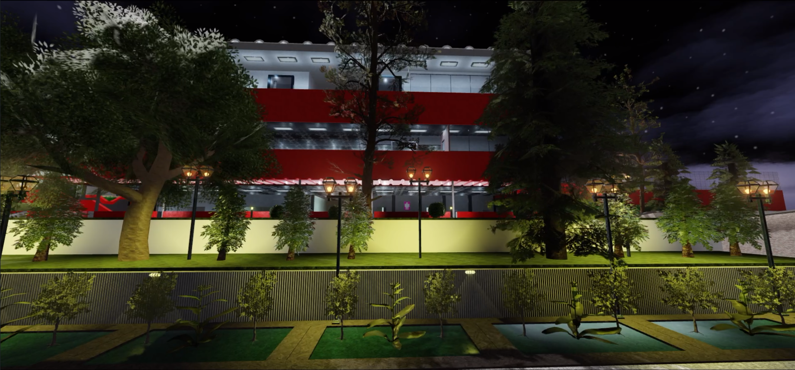

La Vegetación del Planeta
¿Que es la Vegetación?
La vegetación se refiere al conjunto de plantas que crecen en un área específica, incluyendo árboles, arbustos, hierbas y otros organismos vegetales. Esta diversidad de formas de vida es crucial para el equilibrio ecológico de nuestro planeta.
Importancia de la Vegetación
La vegetación juega un papel fundamental en la sostenibilidad del medio ambiente. Algunas de sus funciones más destacadas incluyen:
Producción de oxígeno: Las plantas realizan la fotosíntesis, liberando oxígeno y absorbiendo dióxido de carbono.
Regulación del clima: La vegetación ayuda a moderar las temperaturas y mantener la humedad del aire.
Hábitat para la fauna: Proporciona refugio y alimento a una gran variedad de especies animales.
Recursos económicos: Es una fuente vital de alimentos, madera, medicinas y otros productos.
Características de la Vegetación
Diversidad: Existen diferentes tipos de vegetación, desde densos bosques hasta áridos desiertos, cada uno adaptado a su entorno.
Adaptación: Las plantas desarrollan características únicas para sobrevivir en sus condiciones específicas, como la resistencia a la sequía o la tolerancia al frío.
Ciclos de vida: Las plantas pasan por etapas de germinación, crecimiento, reproducción y muerte, contribuyendo al ciclo natural de los ecosistemas.
Ventajas de la Vegetación
Biodiversidad: Fomenta un ecosistema diverso, esencial para la salud del planeta.
Control de erosión: Las raíces de las plantas ayudan a estabilizar el suelo, previniendo su erosión.
Ciclo del agua: Facilita la absorción y transpiración, regulando el ciclo hídrico local.
Beneficios para la salud: Mejora la calidad del aire y proporciona espacios recreativos que benefician el bienestar humano.
Desventajas de la vegetación
Competencia por recursos: En algunas ocasiones, las plantas pueden competir por nutrientes, agua o luz, lo que puede dificultar el crecimiento de otras especies.
Plagas y enfermedades: Algunas especies vegetales son susceptibles a plagas o enfermedades que pueden afectarlas y, en algunos casos, poner en riesgo la agricultura y los ecosistemas.
Accidentes naturales: La vegetación, especialmente los bosques, puede ser susceptible a incendios forestales, lo que puede causar daños significativos tanto a la flora como a la fauna.
Invasión de especies: Las especies invasoras pueden desplazar a las plantas nativas y alterar el equilibrio ecológico de un ecosistema.